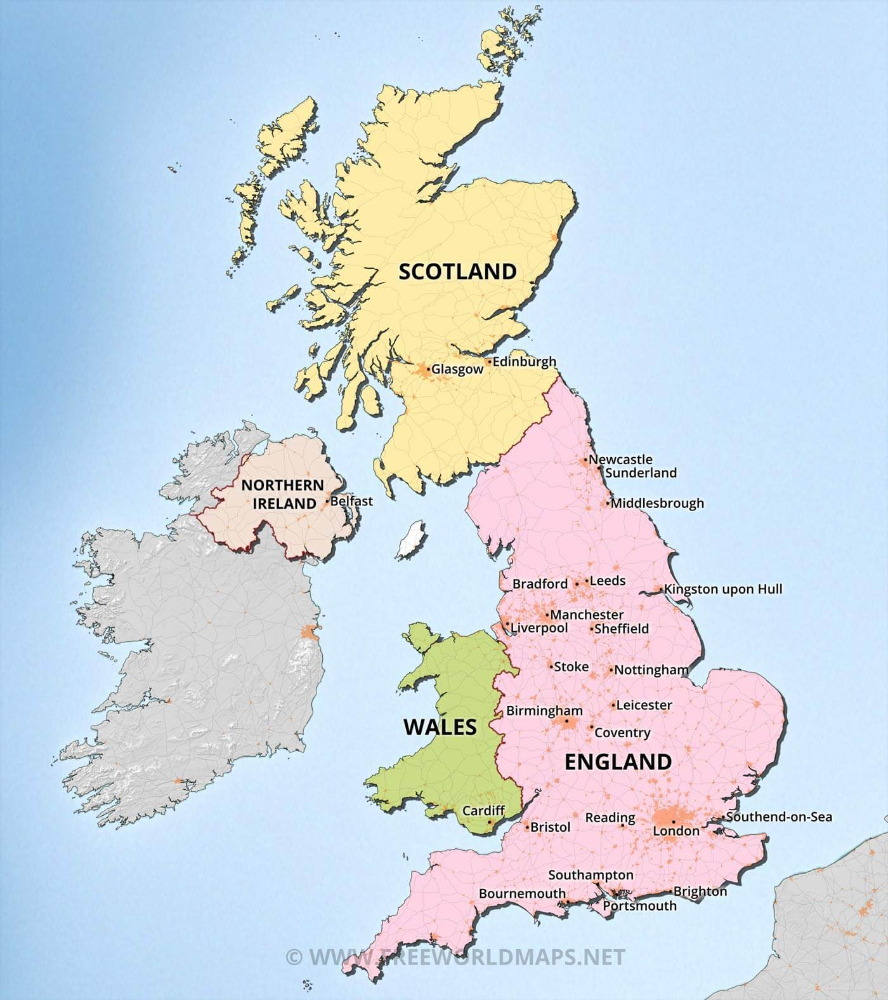

LONDON is famous for its castles,palaces and buildings
LODON is world greatest cosmopolita cities,with an incredible array museums,shops
and restaurents.it also historyin regards to royalty,politics,arts,science,and architecture.

LONDON
Tower bridge is known as the " 19th century in river thames"
Important sites:
1.edinburgh castle
2.block contry living museum
3.bamburgh castle
Population:19 lakhs
edinburgh
Famous for itsMany fine churches, museums, and cultural activities